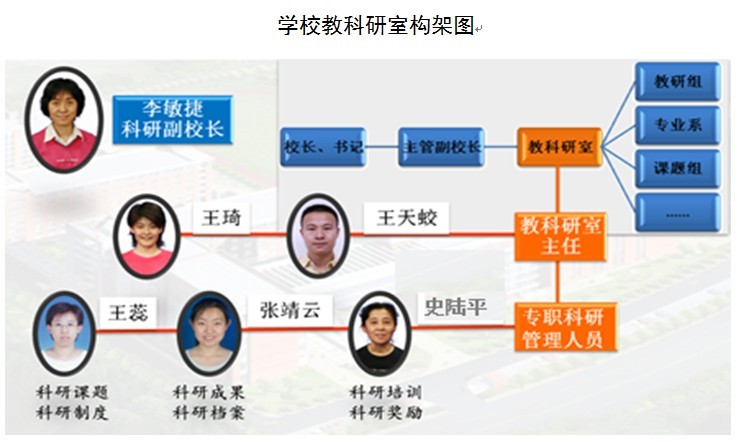

科教园
当前位置：科教园-了解科学部门介绍：
学校的科研组织规范，机构完整。目前学校成立了以校长和书记亲自挂帅的学校科研工作领导小组，并由李敏捷校长直接负责学校的科研工作，并设立独立的教科研室，统一管理各个校区教育教学科研工作。教科研室设主任、副主任各1人，专任科研管理的职员3人。学校科研管理人员包括：海淀区科研带头人1人,海淀区教学管理带头人1人,海淀区学科带头人1人 。
学校大力支持教职员工结合自己的工作实践，开展教育科学的研究，并在每年的经费预算中专门划拨专项的科研经费，支持立项课题的研究。学校还针对全体教师的实际情况，依据“走出去，请进来”的原则，有计划地开展多种形式的科研培养，连续三年用于教师科研能力培养的专项经费占教职员工的工资总额的2.3%、2.5%、2.7%，逐年递增。
学校针对多校区合并的特点，结合原有几所科研传统强校的经验，制定完善了《北京市信息管理学校的科研管理制度》、《学校立项科研课题的管理办法》、《学校科研培训的管理规定》、《学校科研先进的评审办法》、《学校科研成果评审验收标准》等一系列规章制度，并定期召开科研年会，对科研先进、优秀科研成果、优秀科研课题等及时进行表彰奖励。
近年来，先后获得北京市科研先进单位，海淀区科研先进学校，北京市职教学会立项课题管理优秀学校、海淀区“十二五”科研课题中期验收优秀单位等荣誉。